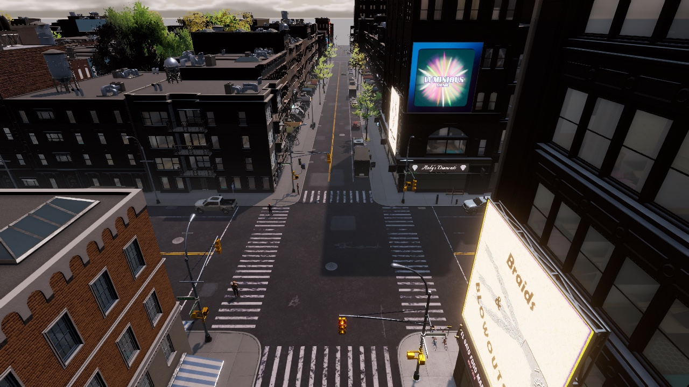

Persistent City · Big Ambitions mod

Real routes, no shortcuts.
Walkers follow complete paths along the streets, never a straight line across a block. Trips can use the subway, and cars drive the game's own road network.
Each route is the fastest door to door among the ones it checks.

Persistent City · development build · in-game screenshot03 / 05